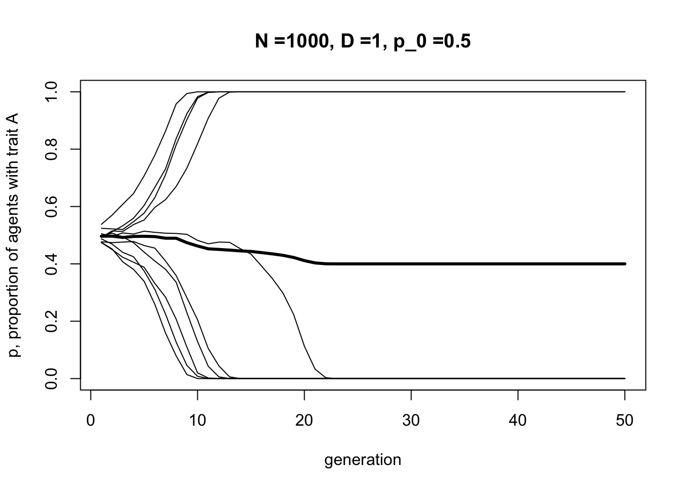
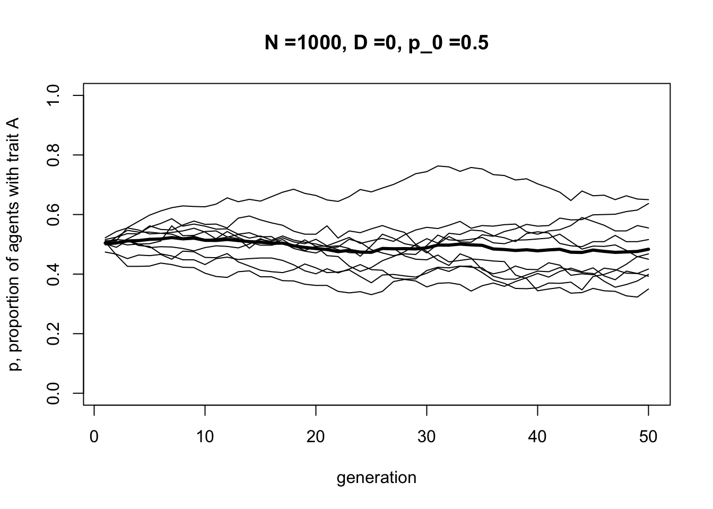
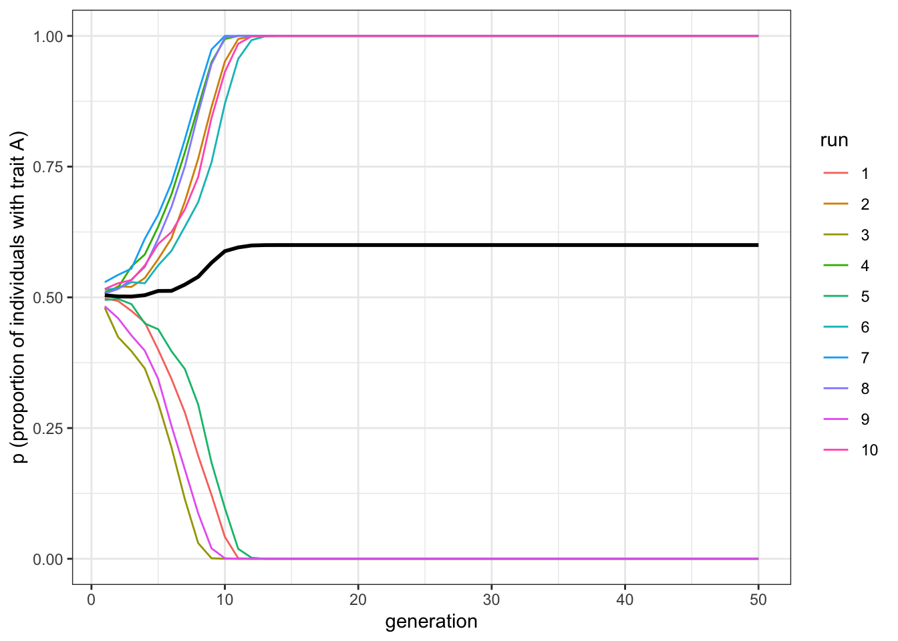
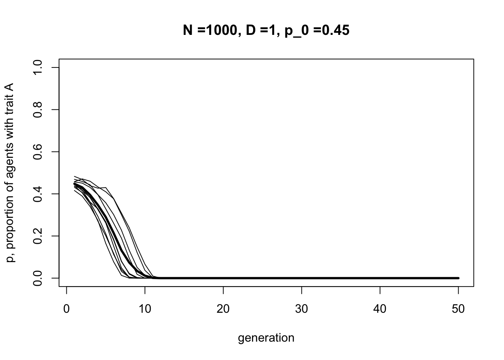
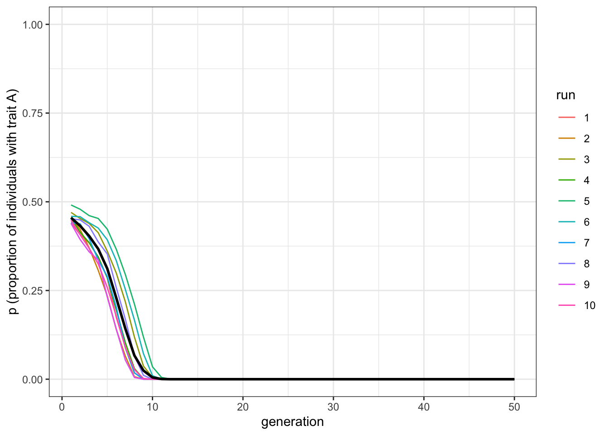
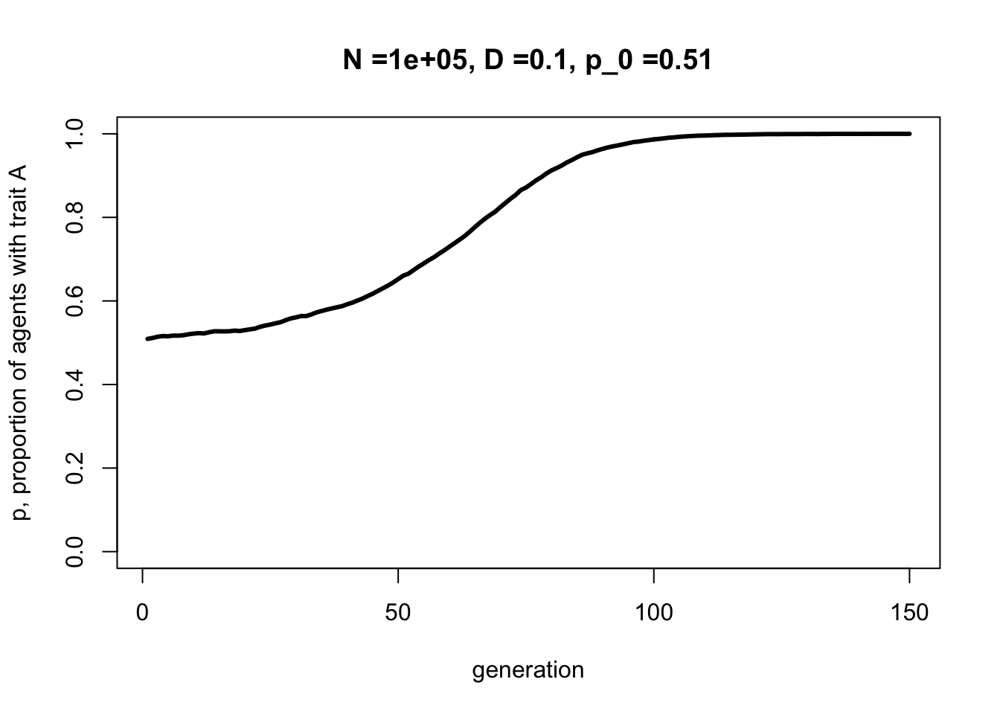
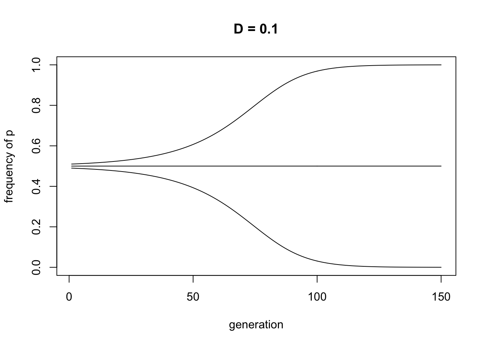

4 Biased transmission (conformist bias)
Model 3 looked at the case where one cultural trait is intrinsically more likely to be copied than another trait. Here we will look at another kind of biased transmission: conformity (or ‘positive frequency dependent bias’). Here, individuals are disproportionately more likely to adopt the most common trait in the population, irrespective of its intrinsic characteristics.
For example, imagine trait \(A\) has a frequency of 0.7 in the population, with the rest possessing trait \(B\). An unbiased learner would adopt trait \(A\) with a probability exactly equal to 0.7. This is unbiased transmission, and is what happens in Model 1: by picking a member of the previous generation at random, the probability of adoption in Model 1 is equal to the frequency of that trait amongst the previous generation.
A conformist learner, on the other hand, would adopt trait \(A\) with a probability greater than 0.7. In other words, common traits get an ‘adoption boost’ relative to unbiased transmission. Uncommon traits get an equivalent ‘adoption penalty’. The magnitude of this boost or penalty can be controlled by a parameter, which we will call \(D\).
Let’s keep things simple in our model. Rather than assuming that individuals sample across the entire population, which in any case might be implausible in large populations, let’s assume they pick only three demonstrators at random. Why three? This is the minimum number of demonstrators that can yield a majority (i.e. 2 vs 1), which we need in order to implement conformity. When two demonstrators have one trait and the other demonstrator has a different trait, we want to boost the probability of adoption for the majority trait, and reduce it for the minority trait.
Following Boyd and Richerson (1985), we can specify the probability of adoption as follows:
Table 1: Probability of adopting trait \(A\) for each possible combination of traits amongst three demonstrators
| Demonstrator 1 | Demonstrator 2 | Demonstrator 3 | Probability of adopting trait \(A\) |
|---|---|---|---|
| \(A\) | \(A\) | \(A\) | 1 |
| \(A\) | \(A\) | \(B\) | |
| \(A\) | \(B\) | \(A\) | \(2/3 + D/3\) |
| \(B\) | \(A\) | \(A\) | |
| \(A\) | \(B\) | \(B\) | |
| \(B\) | \(A\) | \(B\) | \(1/3 - D/3\) |
| \(B\) | \(B\) | \(A\) | |
| \(B\) | \(B\) | \(B\) | 0 |
The first row says that when all demonstrators have trait \(A\), then trait \(A\) is definitely adopted. Similarly, the bottom row says that when all demonstrators have trait \(B\), then trait \(A\) is never adopted, and by implication trait \(B\) is always adopted.
For the three combinations where there are two \(A\)s and one \(B\), the probability of adopting trait \(A\) is \(2/3\), which it would be under unbiased transmission (because two out of three demonstrators have \(A\)), plus the conformist adoption boost specified by \(D\). \(D\) is divided by three so that it varies from 0 to 1.
Similarly, for the three combinations where there are two \(B\)s and one \(A\), the probability of adopting \(A\) is 1/3 minus the conformist adoption penalty specified by \(D\).
Let’s implement these assumptions in the kind of agent-based model we’ve been building so far. As before, assume \(N\) agents each of whom possess one of two traits \(A\) or \(B\). The frequency of \(A\) is denoted by \(p\). The initial frequency of \(A\) in generation \(t = 1\) is \(p_0\). Rather than going straight to a function, let’s go step by step.
First we’ll specify our parameters, \(N\) and \(p_0\) as before, plus the new conformity parameter \(D\). We can also create an agent dataframe and fill it with \(A\)s and \(B\)s in the proportion specified by \(p_0\), again exactly as before. To remind ourselves what agent looks like, we use the head command.
N <- 100
p_0 <- 0.5
D <- 1
agent <- data.frame(trait = sample(c("A","B"), N, replace = TRUE, prob = c(p_0,1-p_0)), stringsAsFactors = FALSE) # create first generation
head(agent)## trait
## 1 B
## 2 B
## 3 B
## 4 B
## 5 B
## 6 ANow we’ll create a dataframe called demonstrators that picks, for each new agent in the next generation, three demonstrators at random from the current population of agents. It therefore needs three columns/variables, one for each of the demonstrators, and \(N\) rows, one for each new agent. We fill each column with randomly chosen traits from the agent dataframe. We can view this with head.
# create dataframe with a set of 3 randomly-picked demonstrators for each agent
demonstrators <- data.frame(dem1 = sample(agent$trait, N, replace = TRUE), dem2 = sample(agent$trait, N, replace = TRUE), dem3 = sample(agent$trait, N, replace = TRUE), stringsAsFactors = F)
head(demonstrators)## dem1 dem2 dem3
## 1 A A A
## 2 B A B
## 3 B A B
## 4 B A B
## 5 B B B
## 6 B B BThink of each row here as containing the traits of three randomly-chosen demonstrators chosen by each new next-generation agent. Now we want to calculate the probability of adoption of \(A\) for each of these three-trait demonstrator combinations.
First we need to get the number of \(A\)s in each combination. Then we can replace the traits in agent based on the probabilities in Table 1. When all demonstrators have \(A\), we set to \(A\). When no demonstrators have \(A\), we set to \(B\). When two out of three demonstrators have \(A\), we set to \(A\) with probability \(2/3 + D/3\) and \(B\) otherwise. When one out of three demonstrators have \(A\), we set to \(A\) with probability \(1/3 - D/3\) and \(B\) otherwise.
To check it works, we can add the new agent dataframe as a column to demonstrators and view the latter with head. This will let us see the three demonstrators and the resulting new trait side by side.
# get the number of As in each 3-dem combo
numAs <- rowSums(demonstrators == "A")
agent$trait[numAs == 3] <- "A" # for dem combos with all As, set to A
agent$trait[numAs == 0] <- "B" # for dem combos with no As, set to B
prob <- runif(N)
# when A is a majority, 2/3
agent$trait[numAs == 2 & prob < (2/3 + D/3)] <- "A"
agent$trait[numAs == 2 & prob >= (2/3 + D/3)] <- "B"
# when A is a minority, 1/3
agent$trait[numAs == 1 & prob < (1/3 - D/3)] <- "A"
agent$trait[numAs == 1 & prob >= (1/3 - D/3)] <- "B"
# for testing only, add the new traits to the demonstrator dataframe and show it
demonstrators$newtrait <- agent$trait
head(demonstrators, 20)## dem1 dem2 dem3 newtrait
## 1 A A A A
## 2 B A B B
## 3 B A B B
## 4 B A B B
## 5 B B B B
## 6 B B B B
## 7 A A B A
## 8 B B B B
## 9 B A A A
## 10 A B B B
## 11 A B B B
## 12 B B B B
## 13 B A B B
## 14 B B B B
## 15 B B A B
## 16 A B A A
## 17 A B A A
## 18 B B B B
## 19 A B B B
## 20 B A A ABecause we set \(D=1\) above, we should see above that the new trait is always the majority trait amongst the three demonstrators. This is perfect conformity. We can weaken conformity by reducing \(D\), in the code below.
N <- 100
p_0 <- 0.5
D <- 0.1
agent <- data.frame(trait = sample(c("A","B"), N, replace = TRUE, prob = c(p_0,1-p_0)), stringsAsFactors = FALSE) # create first generation
# create dataframe with a set of 3 randomly-picked demonstrators for each agent
demonstrators <- data.frame(dem1 = sample(agent$trait, N, replace = TRUE), dem2 = sample(agent$trait, N, replace = TRUE), dem3 = sample(agent$trait, N, replace = TRUE), stringsAsFactors = F)
# get the number of As in each 3-dem combo
numAs <- rowSums(demonstrators == "A")
agent$trait[numAs == 3] <- "A" # for dem combos with all As, set to A
agent$trait[numAs == 0] <- "B" # for dem combos with no As, set to B
prob <- runif(N)
# when A is a majority, 2/3
agent$trait[numAs == 2 & prob < (2/3 + D/3)] <- "A"
agent$trait[numAs == 2 & prob >= (2/3 + D/3)] <- "B"
# when A is a minority, 1/3
agent$trait[numAs == 1 & prob < (1/3 - D/3)] <- "A"
agent$trait[numAs == 1 & prob >= (1/3 - D/3)] <- "B"
# for testing only, add the new traits to the demonstrator dataframe and show it
demonstrators$newtrait <- agent$trait
head(demonstrators, 20)## dem1 dem2 dem3 newtrait
## 1 A A A A
## 2 A A A A
## 3 A A B A
## 4 B A B B
## 5 A B B A
## 6 B B A B
## 7 B A B B
## 8 B A A B
## 9 B A B B
## 10 B B A A
## 11 B B B B
## 12 A A A A
## 13 A A A A
## 14 A A A A
## 15 B B B B
## 16 B A A A
## 17 B B B B
## 18 B A A B
## 19 A A A A
## 20 B A A ANow that conformity is weaker, sometimes the new trait is not the majority amongst the three demonstrators. With the small sample shown above, it’s perhaps not possible to notice it. Hopefully when we put it all together now into a function and run it over multiple generations, we will notice an effect. The code below is a combination of Model 1 (unbiased transmission) and the code above for conformity.
ConformistTransmission <- function (N, p_0, D, t_max, r_max) {
output <- as.data.frame(matrix(NA,t_max,r_max)) # create a matrix with t_max rows and r_max columns, filled with NAs, then convert to data.frame
names(output) <- paste("run", 1:r_max, sep="") # purely cosmetic: rename the columns with run1, run2 etc.
for (r in 1:r_max) {
agent <- data.frame(trait = sample(c("A","B"), N, replace = TRUE, prob = c(p_0,1-p_0)), stringsAsFactors = FALSE) # create first generation
output[1,r] <- sum(agent$trait == "A") / N # add first generation's p to first row of column r
for (t in 2:t_max) {
# create dataframe with a set of 3 randomly-picked demonstrators for each agent
demonstrators <- data.frame(dem1 = sample(agent$trait, N, replace = TRUE), dem2 = sample(agent$trait, N, replace = TRUE), dem3 = sample(agent$trait, N, replace = TRUE), stringsAsFactors = F)
# get the number of As in each 3-dem combo
numAs <- rowSums(demonstrators == "A")
agent$trait[numAs == 3] <- "A" # for dem combos with all As, set to A
agent$trait[numAs == 0] <- "B" # for dem combos with no As, set to B
prob <- runif(N)
# when A is a majority, 2/3
agent$trait[numAs == 2 & prob < (2/3 + D/3)] <- "A"
agent$trait[numAs == 2 & prob >= (2/3 + D/3)] <- "B"
# when A is a minority, 1/3
agent$trait[numAs == 1 & prob < (1/3 - D/3)] <- "A"
agent$trait[numAs == 1 & prob >= (1/3 - D/3)] <- "B"
output[t,r] <- sum(agent$trait == "A") / N # get p and put it into output slot for this generation t and run r
}
}
# first plot a thick line for the mean p
plot(rowMeans(output), type = 'l', ylab = "p, proportion of agents with trait A", xlab = "generation", ylim = c(0,1), lwd = 3, main = paste("N =", N, ", D =", D, ", p_0 =", p_0, sep = ""))
for (r in 1:r_max) {
lines(output[,r], type = 'l') # add lines for each run, up to r_max
}
output # export data from function
}Note that we omit the testing code above (we’ve tested it and it works!), and there’s no need to put agent into previous_agent because we have the demonstrator dataframe doing that job. Let’s run the function.
data_model4 <- ConformistTransmission(N = 1000, p_0 = 0.5, D = 1, t_max = 50, r_max = 10)
Here we should see some lines going to \(p = 1\), and some lines going to \(p = 0\). Conformity acts to favour the majority trait. This will depend on the initial frequency of \(A\) in the population. In different runs with \(p_0 = 0.5\), sometimes there will be slightly more \(A\)s, sometimes slightly more \(B\)s (remember, in our model this is probabilistic, like flipping coins, so initial frequencies will rarely be precisely 0.5).
Let’s compare conformity to unbiased transmission, by setting \(D = 0\).
data_model4 <- ConformistTransmission(N = 1000, p_0 = 0.5, D = 0, t_max = 50, r_max = 10)
As in Model 1 with a sufficiently large \(N\), we should see frequencies fluctuating around \(p = 0.5\). This underlines the effect of conformity: it drives traits to fixation as they become more and more common.
As an aside, note that the last two graphs have roughly the same thick black mean frequency line, which hovers around \(p = 0.5\). This highlights the dangers of looking at means alone. If we hadn’t plotted the individual runs and relied solely on mean frequencies, we might think that \(D = 0\) and \(D = 1\) gave identical results. But in fact, they are very different. Always look at the underlying distribution that generates means.
Now let’s explore the effect of changing the initial frequencies by changing \(p_0\), and adding conformity back in.
data_model4 <- ConformistTransmission(N = 1000, p_0 = 0.55, D = 1, t_max = 50, r_max = 10)
When \(A\) starts off in a slight majority (\(p_0 = 0.55\)), most if not all of the runs should result in \(A\) going to fixation. Now let’s try the reverse.
data_model4 <- ConformistTransmission(N = 1000, p_0 = 0.45, D = 1, t_max = 50, r_max = 10)
When \(A\) starts off in a minority (\(p_0 = 0.45\)), most if not all runs should result in \(A\) disappearing. These last two graphs show how initial conditions affect conformity. Whichever trait is more common is favoured by conformist transmission.
4.1 Summary of Model 4
Model 4 explored conformist biased cultural transmission. This is where individuals are disproportionately more likely to adopt the most common trait among a set of demonstrators. We can contrast this with the direct or content biased transmission from Model 4, where one trait is intrinsically more likely to be copied. With conformity, the traits have no intrinsic attractiveness and are preferentially copied simply because they are common.
We saw how conformity increases the frequency of whichever trait is more common. Initial trait frequencies are important here: traits that are initially more common typically go to fixation. This in turn makes stochasticity important, which in small populations can affect initial frequencies.
The major programming innovation in Model 4 was the use of an intermediate dataframe to hold the demonstrators. We then created the next generation using a table of probabilities (Table 1), which specified for each combination of demonstrators the probability of adopting each trait.
4.2 Analytic appendix
An alternative way of doing all the above is with deterministic recursions, as Boyd & Richerson (1985) originally did.
Let’s revise Table 1 to add the probabilities of each combination of three demonstrators coming together, assuming they are picked at random. These probabilities can be expressed in terms of \(p\), the frequency of \(A\), and \((1 - p)\), the frequency of \(B\). Table 2 adds this column.
Table 2: Full adoption probability table for trait \(A\) under conformist transmission
| Dem 1 | Dem 2 | Dem 3 | Prob of adopting \(A\) | Prob of combination forming |
|---|---|---|---|---|
| \(A\) | \(A\) | \(A\) | 1 | \(p^3\) |
| \(A\) | \(A\) | \(B\) | ||
| \(A\) | \(B\) | \(A\) | \(2/3 + D/3\) | \(p^2(1-p)\) |
| \(B\) | \(A\) | \(A\) | ||
| \(A\) | \(B\) | \(B\) | ||
| \(B\) | \(A\) | \(B\) | \(1/3 - D/3\) | \(p(1-p)^2\) |
| \(B\) | \(B\) | \(A\) | ||
| \(B\) | \(B\) | \(B\) | 0 | (1-p)^3 |
To get the frequency of \(A\) in the next generation, \(p'\), we multiply, for each of the eight rows in Table 2, the probability of adopting \(A\) by the probability of that combination forming (i.e. the final two columns in Table 2), and add up all of these eight products. After rearranging, this gives the following recursion:
\[p' = p + Dp(1-p)(2p-1) \hspace{30 mm}(4.1)\]
Now we can create a function for this recursion:
ConformityRecursion <- function(D, t_max, p_0) {
p <- rep(0,t_max)
p[1] <- p_0
for (i in 2:t_max) {
p[i] <- p[i-1] + D*p[i-1]*(1-p[i-1])*(2*p[i-1] - 1)
}
plot(p, type = "l", ylim = c(0,1), ylab = "frequency of p", xlab = "generation", main = paste("D = ", D, ", p_0 = ", p_0, sep = ""))
}Here, we use a for loop to cycle through each generation, each time updating \(p\) according to the recursion equation above. Remember, there is no \(N\) here because the recursion is deterministic and assumes an infinite population size; hence there is no stochasticity due to finite population sizes. There is also no need to have multiple runs as each run is identical, hence no \(r_{max}\).
The following code runs the ConformityRecursion function with weak conformity (\(D = 0.1\)) and slightly more \(A\) in the initial generation (\(p_0 = 0.51\)).
ConformityRecursion(D = 0.1, t_max = 150, p_0 = 0.51)
As in the agent-based model, the initially most-frequent trait, here \(A\), goes to fixation. Let’s compare to the agent-based model with the same parameters, and a large enough \(N\) to make stochasticity unimportant.
data_model4 <- ConformistTransmission(N = 100000, p_0 = 0.51, D = 0.1, t_max = 150, r_max = 1)
It should be a pretty good match. Try playing around with smaller \(N\) to show that stochastic agent-based models are most likely to match deterministic recursion models when \(N\) is large.
Let’s modify the ConformityRecursion function to accept multiple values of \(p_0\), so we can plot different starting frequencies on the same graph.
ConformityRecursion <- function(D, t_max, p_0) {
numSims <- length(p_0)
p <- as.data.frame(matrix(NA, nrow = t_max, ncol = numSims))
p[1,] <- p_0
for (i in 2:t_max) {
p[i,] <- p[i-1,] + D*p[i-1,]*(1-p[i-1,])*(2*p[i-1,] - 1)
}
plot(p[,1], type = "l", ylim = c(0,1), ylab = "frequency of p", xlab = "generation", main = paste("D =", D))
if (numSims > 1) {
for (i in 2:numSims) {
lines(p[,i], type = 'l')
}
}
}The following command plots three different values of \(p_0\), one less than 0.5, one equal to 0.5, and one greater than 0.5. This should confirm that conformity favours whichever trait is initially most frequent.
ConformityRecursion(D = 0.1, t_max = 150, p_0 = c(0.49,0.5,0.51))
Again, this matches the simulations above where some runs are randomly initially above 0.5 and others below 0.5.
Finally, we can use the recursion equation to generate a plot that has become a signature for conformity in the cultural evolution literature. The following code plots, for all possible values of \(p\), the probability of adopting \(p\) in the next generation.
p <- seq(0,1,length.out = 101)
D <- 1
p_next <- p + D*p*(1-p)*(2*p-1)
plot(p, p_next, type = 'l', ylab = "probability of adopting A (p')", xlab = "frequency of A (p)", main = paste("D =", D))
abline(a = 0, b = 1, lty = 3)
This encapsulates the process of conformity. The dotted line shows unbiased transmission: the probability of adopting \(A\) is exactly equal to the frequency of \(A\) in the population. The s-shaped solid curve shows conformist transmission. When \(A\) is common (\(p > 0.5\)), then the curve is higher than the dotted line: there is a disproportionately higher probability of adopting \(A\). When \(A\) is uncommon (\(p < 0.5\)), then the curve is lower than the dotted line: there is a disproportionately lower probability of adopting \(A\).